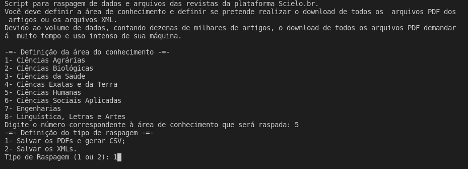
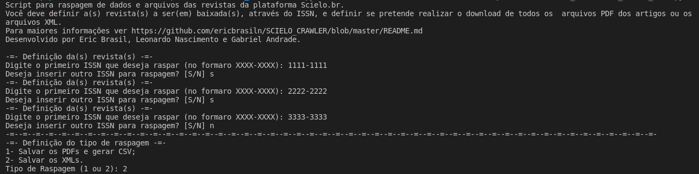
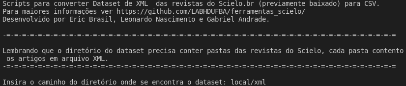

7 Scielo.br
7.1 O que é Scielo?
Scielo (Scientific Electronic Library Online e que ) é uma biblioteca digital que reune uma vasta coleção de periódicos científicos brasileiros. Segundo site oficial, consiste seu objetivo é ser:
Biblioteca eletrônica que possa proporcionar um amplo acesso a coleções de periódicos como um todo, aos fascículos de cada título de periódico, assim como aos textos completos dos artigos. O acesso aos títulos dos periódicos e aos artigos pode ser feito através de índices e de formulários de busca. (…) O site da SciELO é parte do Projeto FAPESP/BIREME/CNPq e um dos produtos da aplicação da metodologia para preparação de publicações eletrônicas em desenvolvimento, especialmente o módulo de interface Internet.
Além dos artigos em formato PDF, o Scielo.br disponibiliza arquivos em formato XML para todos os itens de todos os periódicos que formam sua coleção. Esses XML possuem metadados muito valiosos para pesquisas nas mais variadas áreas e com interesses múltiplos.
Portanto, diante do valor imenso desse conjunto de dados para as pesquisas em Humanidades, desenvolvemos três ferramentas de raspagem de dados específicas para o Scielo.br.
- A primeira delas,
scielo_scraper, permite que o usuário define uma das oito áreas de conhecimento disponíveis na coleção do Scielo.br para efetuar uma raspagem completa (é possível optar se pretende raspar os arquivos PDF ou apenas os arquivos XML); - A segunda,
scielo_ISSN, permite que o usuário defina uma lista específica de revistas que pretende raspar através ISSN de cada uma delas. Assim como na ferramenta anterior, é possível definir o tipo de raspagem (PDF ou XML); - A terceira ferramente é específica para tratamento dos dados gerados pelas raspagens dos arquivos XML. A
scielo_xml_to_csvanalisa, seleciona, organiza e salva as informações do dataset de arquivos XML das revistas previamente baixados a partir das ferramentas anteriores.
Abaixo, detalhamos cada uma delas.
7.2 Scripts de raspagem
Clique aqui para acessar o repositório no Github
7.2.1 scielo_scraper - Raspagem por área do conhecimento
Esse script permite ao usuário selecionar qual assunto ele pretende raspar de acordo com a categorização estabelecida pela plataforma Scielo.br. Após rodar o run_scielo_scraper.py é possível escolher entre oito assunto:
- Ciências Agrárias
- Ciências Biológicas
- Ciências da Saúde
- Ciêncas Exatas e da Terra
- Ciências Humanas
- Ciências Sociais Aplicadas
- Engenharias
- Linguística, Letras e Artes
Após a definição do assunto, é preciso definir o tipo de raspagem:
- Realizar o download de todos os arquivos PDF de cada revista do assunto selecionado. É criado um CSV com informações básicas sobre a raspagem (nome da revista, ISSN, nome do arquivo e link para o PDF)
:warning: Devido ao volume de dados, contando dezenas de milhares de artigos, o download de todos os arquivos PDF demandará muito tempo e uso intenso de sua máquina.
- Realizar o download dos arquivos XML de cada revista do assunto selecionado.
:warning: Os arquivos XML possuem todos os metadados dos artigos, incluíndo as referências bibliográficas). Após o download dos arquivos XML é posssível utilizar a ferramenta scielo_xml_to_csv para convertar todos os XML para uma planilha. Para mais informações leia o README.md da ferramenta.

7.2.2 scielo_ISSN - Raspagem por ISSN
Nesse script é possível raspar uma revista ou uma lista de revistas através do ISSN.
Possui as mesmas características do run_scielo_scraper.py, porém a definição da(s) revista(s) a ser raspada é feita ISSN.

7.3 Dados
Ambos os scripts criarão diretórios para armazenar os arquivos e dados.
scielo/pdf/nomeDaRevistano caso da raspagem de PDFs;scielo/xml/nomeDaRevistano caso da raspagem de XMls.
:warning: Atenção: Se a pasta com o nome de uma revista já exixtir, o algoritmo entenderá que a raspagem dela já foi efetuada e passará para a revista seguinte seguinte.
Download: Se preferir baixar a base dos XML das revistas da área de Ciências Humanas sem usar o código clique aqui. Esse arquivo zipado é formado pelos arquivos XML de 91 revistas categorizada como Ciências Humanas pelo Scielo.br, totalizando 72.552 itens. Essa raspagem foi realizada em 22 de novembro de 2020 e o arquivo .zip tem 890.2 MB.
7.4 scielo_xml_to_csv - Tratamento dos dados
Clique aqui para acessar o repositório no Github
Scripts para converter Dataset de XML das revistas do Scielo (previamente baixado) para CSV.
Esses scripts tem como objetivos analisar, selecionar, organizar e salvar informações de um dataset de arquivos XML de todas as revistas previamente baixados a partir das ferramentas_scielo
O run.py , após solicitar que o usuário defina o caminho da pasta com o dataset, acessa a mesma e analisa cada XML, inserindo os dados em um arquivo CSV salvo com o nome metadata_{revista}.csv, numa pasta scielo/xml/CSVs.
:warning: É preciso definir o caminho do diretório com o dataset. Essa pasta deve conter pastas de cada revista com seus arquivos XML a serem analisados.

As seguintes informações são inseridas no CSV:
- index,
- file_name: nome do arquivo,
- article_id: identificação do arquivo,
- authors: lista de autores,
- authors affiliation: lista de filiações,
- article_title: título do artigo,
- journal_title: título do revista,
- journal_issn: ISSN da revista,
- journal_publisher: instituição da revista,
- pub_date: data da publicação,
- abstract: resumo,
- key_words: lista de palavras-chave,
- volume: volume,
- num: número,
- fpage: pasta inicial,
- lpage: página final,
- doi: DOI,
- refs: lista (contendo listas) das referências, divididas por tipo (livro, capítulo, artigo, etc)
- link pdf: link para o arquivo em PDF do artigo.
Em seguida, com a função df_final(), todos os arquivos CSV são unidos (ou concatenados) em um único dataframe com Pandas e salvos em um CSV chamado metadata_scielo_{yyyy-mm-dd_H-M-S}.csv na pasta scielo/xml/CSVs/metadados-scielo. Nesse csv final há uma nova coluna chamada original_index, onde consta a numeração do index original de cada revista e um novo index geral é criado (consta na atualização de 04/05/2021).
Download: Se preferir baixar a base dos CSV de Ciências Humanas sem usar o código clique aqui. Esse arquivo zipado é formado pelos arquivos CSV das 91 revistas categorizada como Ciências Humanas pelo Scielo.br previamente raspados usando a ferramenta scielo_scraper em 22 de novembro de 2020. A execução do scielo_xml_to_csvaconteceu em 04/04/2021 e gerou esse arquivo zipado com todos os 91 CSVs de cada revista mais o CSV final, com todos os 72.552 itens e possui 234.4 MB.
Elementos presentes nesse repositório foram retirados de Scielo_Journal_Metadata_Downoader, criado por johnsgomez